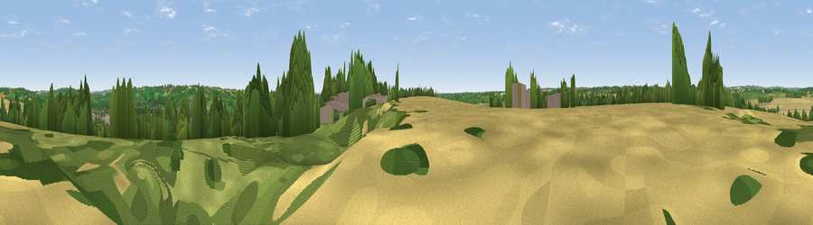

Viewpoint near Bourton-on-the-Water
#34906 in England · top 68% of its area beats it · near Bourton-on-the-Water · access?Where it is
The exact computed spot (SP 15675 19775). Click the marker for map links.
Public access: no public right of way or access land is recorded at this exact spot — it may be on private land. Computed from Natural England's CRoW access layer and OpenStreetMap rights of way — not the legal definitive map. Always verify locally.
The view, rendered

A 360° render of this exact spot computed from the terrain model, tree cover and land cover — summer colours, afternoon light, calibrated against photographs of famous viewpoints. Real trees, hedges and buildings will differ in detail.
The panorama
Grey silhouette: terrain skyline in each direction (720 bearings, Earth curvature and refraction included). Dashed green: skyline with trees (+15 m) and buildings (+8 m) as obstacles. Blue strip: how far the ground is visible on each bearing.
Where the view opens
Wedge length = distance to the farthest visible ground on that bearing (vegetation-aware). Rings at 10, 25 and 50 km.
What fills the view
39% grassland · 31% cropland · 25% woodland · 5% built-up ·
Angular shares of the visible panorama (visual magnitude), not map area. Landscape diversity 0.55 (0–1 Shannon).
Key numbers
More beautiful places nearby
The staircase of upgrades: each row has a higher view potential than everything closer. Driving times are estimates from straight-line distance, calibrated against real road routing — check an actual route before setting out.
| Place | Direction | Drive | Score |
|---|---|---|---|
| Viewpoint near Bourton-on-the-Water | SSE · 2 km | ~5 min | 47.5 |
| Viewpoint near Wyck Rissington | ENE · 5 km | ~11 min | 58.7 |
| Viewpoint near Icomb | NE · 6 km | ~12 min | 63.9 |
| Roel Hill | WNW · 12 km | ~22 min | 67.6 |
| Viewpoint near Sudeley | NW · 13 km | ~24 min | 68.8 |
| Viewpoint near Hailes | NW · 14 km | ~25 min | 69.6 |
| Viewpoint near Charlton Abbots | WNW · 14 km | ~26 min | 70.2 |
| Salter's Hill | NW · 14 km | ~26 min | 72.3 |
51.87633, -1.77371 · source: screening · position refined by local search. Computed location — check access rights before visiting.